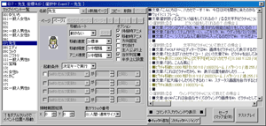

（2010/07/08） Ver1.30 エディター部分を大改造！ 64bit版のWindowsにもおそらく完全対応しました。 【新機能】 マップ編集・マップイベント作成の効率が、大幅に向上しました。 ・ 【マップイベント作成効率アップ】 ウィンドウの左側に、マップ内の全イベントを一覧表示するよう修正。 コモンイベントエディタのように、一覧のイベント名をクリックして編集イベントを切り替えられます。 また、一覧のイベント名をダブルクリックすることで、イベントの場所までマップを移動させられます。 （なお、この一覧に対してのC、V、Xキーのコピー・ペースト・切り取り処理は、現段階では未対応です）  【新しいマップイベントウィンドウ】 ・【イベントエディタ】 イベントコマンドのまとめ選択を、より直感的に行えるよう修正。 - Shiftを押さなくても、ドラッグだけでコマンドのまとめ選択が可能になりました。 - 条件分岐やループが一部でも選択されていると、その分岐全体が自動選択されるようになりました。 これによって、条件分岐が一部だけ切り取られてデータが破損するようなことがなくなります。 ※すでに分岐情報が破損している場合は、旧バージョンのShift＋Delで一部削除していただくか、 イベントを作り直して、少しずつコピーしていただくのが安全です。 ・【マップイベントエディタ】 マップイベントウィンドウの伸縮が可能になりました。 ・【マップエディタ】 ゲームスタート地点が表示されるようになりました。 ・【マップチップ選択ウィンドウの機能を強化】 - マップチップ選択欄に、赤いカーソルが表示されるようになりました。 - マップチップを選択したとき、タイトルバーにチップ番号とタグ番号、通行設定（○×★）が表示されるよう修正 ・【タイルセット設定出力】 タイルセット設定をファイルに入出力できるようになりました。 これで、マップチップ素材とチップ設定ファイルの同時配布が可能になります。 ・【変数操作+】 指定座標の「レイヤー1,2,3のマップチップID取得」および 「レイヤー1,2,3のマップタグ取得」が取得可能になりました。 ・【ヘルプ】 「変数呼び出し値・特殊文字一覧」を、「ヘルプ」から表示できるようになりました。 【重要な仕様変更】 ・【その他2・コモンイベント名での呼び出し順序変更】 これまで、「コモンイベント名」でコモンイベントを呼び出したとき、同じ名前があった場合は 一番小さいＩＤのコモンイベントが呼び出されていましたが、 それを今回のバージョンから逆にし、後ろにあるコモンを優先して呼び出すようにしました。 これは、将来的に、「元のコモンイベントを残したまま処理を上書きする」ことを容易にするための意図です。 ※コンテストをお控えの皆さんは、使わないコモンの名前を少し変えるなどの対応をお取りになるか、 引き続きVer1.20をご利用ください。 【ゲーム部 仕様修正】 ・【イベントエディットウィンドウ】 「次チェックPへジャンプ」でShiftを押しながらクリックすると、 通常とは逆方向に向かってジャンプするように修正 ・【DB操作】 エラー周りのチェック処理を減らして、処理を軽くしてみました。 多くいじったので、もし何か不具合が出るようでしたらご連絡下さい。 ・【条件(文字列)】 右辺テキストボックス内の特殊文字は、置換後に比較されるよう修正しました。 （従来は素の文字そのまま比較していたので、特殊文字などが認識できませんでした） ・【DB操作】 文字列読み込みの際、特殊文字変換が機能していなかったのを修正。 ・【文字列操作】 フォルダのファイル一覧読込時、先頭に「/」を入れたときは機能しないように修正。 （ファイル内容読込時と仕様を合わせました） ・【その他1・キー入力】 「上下のみ」「左右のみ」の処理だけ、上下または左右を同時押しすると 常に入力キーが上/右に偏っていたので、最後に押した方向が優先されるよう修正しました。 【ゲーム部 バグ修正】 ・【ゲーム基本設定】 640x480時において、「なめらか＆ぼんやりモード」をオンにした状態にで、 ピクチャを拡大率100％、角度0で表示すると、そのまま表示されるはずの画像が ぼんやりしてしまうことがあるバグを修正。 ・【システム変数】 SysS10～15【主人公/仲間画像】に、文字列操作で"\\" 区切りのパスを 代入すると、エラーが発生する現象を修正。 ・【システム変数】 音量補正値が99以下の場合、Sys95、96のBGM・BGS音量に値を入れ直すと 音量がどんどん下がっていくバグを修正。 ・【特殊文字】 アイコン\i[？]の「78＋112*X（X=1,2,3...)」番の値のアイコンが表示されないバグを修正。 数値を入れられる他の特殊文字でも同様の症状が出ていたので、修正しました。 ・【サウンド】 ゲームをロードしたとき、MIDI形式以外の音声をファイル名指定で再生すると、 ロード時にその音声が再生されなくなることがあるバグを修正 ・【変数操作+】 マップをループに設定し、イベントの「画面内にいるか？」を使用すると 左と上方向に0座標をまたいだイベントは画面内にいるのに0を返すバグを修正。 ・【動作指定】 「動作完了までウェイト」せずに、ループするマップで動作指定で イベントを右/下に移動させると、そのうちキャラが消えるバグを修正 ・【変数操作+】 ループ越しのイベントに「イベントが画面内にいるか？」を使用したときの挙動が怪しいのを修正 ・【その他1・イベントの一時消去】 自動イベントで「イベントの一時消去」を行うと、 別の自動イベントがあってもその間に一歩移動できてしまう現象を、起きなくしました。 ・【動作指定】 仲間のすり抜けをOFFにすると、透明なイベントの上まで 歩けなくなってしまっていた現象を修正。 ・【場所移動】 イベントの場所移動時にかかっていたウェイトをなくしました。 ・【キャラ画像】 画像指定削除が正常に機能していなかったバグを修正。 ・【ピクチャ】 文字列ピクチャをマップにリンクさせると、1画面ごとに位置がずれる現象を修正 ・【ピクチャ・文章の表示】 ソフトウェアモード時に256色画像のアイコンを使うと透過されないバグを修正 【エディター部 仕様変更】 ・【描画】 64bit版のWindowsで、画像を指定していないイベントが見えなくなる現象に対処しました。 「場所移動」の行き先選択時にも、同様の対策をほどこしました。 ・【データベース】古いデータベースファイルを読み込むと、状況によっては起動できなくなるバグを修正 ・【コモンイベント】 検索したとき、検索箇所がイベントコマンド欄の中央付近に来るよう修正 ・【DB操作】 データ番号を変数で指定した時、下に表示される説明文も反映されるよう修正 ・【コモンイベント・DBタイプ出力】 保存時にコモン名やタイプ名に「/」や「<」、「>」「;」などの 特定の文字が入っていた場合、従来は保存ボタンを押しても完全に無反応でしたが、 本バージョンよりそれらの文字を全角文字に変換し、そのまま保存できるようになりました。 ・【マップエディタ】 中マウスクリック＋ドラッグで移動させるとき、画面端に行くとガタガタする現象を修正 ・【マップイベントエディタ】 320x240解像度時のキャラクターが小さかったので、2倍表示するよう修正 ・【条件分岐（変数）】 右辺に「変数」ボタンを付けました。 ・【データベース】各DBのウィンドウに各DBのアイコンが表示されるよう修正。さらに最小化ボタンを追加。 ・【マップ選択ウィンドウ】 マップツリーの展開・非展開状態もセーブされるようになりました。 ・【コモンイベント 検索】 検索結果の行が、イベントリストの中央付近に表示されるようになりました。 【エディター部 バグ修正】 ・【マップチップ選択】 範囲選択時の挙動が怪しかったのを修正 ・【イベントコマンド】 ピクチャの「カラー」を同値にすると、角度などの情報が重ねて表示されるバグを修正 ・【変数操作】 「傾き」を選んでる状態で「クリア」を押すと右辺がそのまま残ってしまうバグ ・【動作指定】 「指定の座標に接近」がある状態でXで切り取りすると、 そのコマンドにカーソル移動してしまう現象を修正。 ・【動作指定】 Ctrlを押しながら選択することで、離れた位置を複数選択できないように修正。 ・【文字列操作】 文字列置換時にイベントコマンドの修正画面で、 置換後の右側入力欄の改行が消えてしまっていたバグを修正。 ・【条件分岐（文字列）】 右辺の文字列に長い文章を代入してコマンド入力すると強制終了するバグを修正。 ・【テストプレイ】 メインウィンドウ上部のアイコンからテストプレイをすると、 実行するたびに20MBずつメモリ消費が増えていたバグを修正。 ・【マップチップ選択】 左上にはみ出てチップを選択できてしまっていたバグを修正 ・【文字列操作・DB操作】 極端に長い文字列を、文字列欄に入力してコマンド入力すると、 エラーが出たり、強制終了するような現象が発生するバグを修正 ・【マップ設定】 マップ基本設定でマップサイズを縮小変更時、削除される範囲に2つ以上イベントがある場合、 プログラムが応答しなくなってしまうバグを修正 （2010/04/29） Ver1.20 重要な仕様変更と多数の修正が含まれるため、メジャーアップデートとします。 【新機能】 慣れた人が喜びそうな機能を、色々詰め込みました。 ・【高速化】 マップイベント、コモンイベント全体の処理速度を、Ver1.16から約1.2～1.4倍ほど高速化しました！ （一般的な組み方なら、イベント処理時間がおよそ20～30％カットされるようです） アドバイスを下さったtkool2WOLF+の六花様、誠にありがとうございました。 ・【ゲーム基本設定】 ピクチャの拡大縮小時の設定 ピクチャを拡大縮小したときの描画を、「くっきり＆ガタガタ」にする（※従来と同様）か、 「なめらか＆ぼんやり」にするかを選択できるようになりました。 ただし、「なめらか＆ぼんやり」は3Dモード時の場合のみ有効です。 ・【ゲーム基本設定】 「ウィンドウを非アクティブにしたときの挙動」 が設定可能になりました。 ゲーム画面がアクティブでなくなったとき、処理を停止するか、しないかを選択できます。 ゲームを開きながら編集したい場合は、「処理を停止」にするのがおすすめです。 ・【テストプレイのしやすさ向上】 プレイしながらの編集作業が容易になりました。 テストプレイ中にF11を押すと、主人公の座標・各種変数値を保持したまま、 マップ＆タイルセット設定＆ユーザDB＆システムDB＆コモンイベントの再読み込みができるようになりました。 これで、従来より素早く編集→テストの繰り返し作業が行えるようになるはずです。 ※ただし、マップセルフ番号はイベントIDの変化などによって、ずれてしまう可能性があります。 ・【マップエディタ】 背景に設定した画像をマップエディタに表示するようにしました。 これで描いた絵そのものをマップにするような演出も、作りやすくなると思います。 これに伴い、デフォルトの背景色が紺色から黒になりました。 ・【ファイル選択】 エディタ上からのサウンドの確認が、ある程度容易になりました。 サウンド選択時などのファイル選択の際、ファイル名をダブルクリックすると、 Windows側で関連づけされたアプリケーションで実行できるよう修正。 BGMやSEの確認に便利だと思います。ただ、関連づけされたソフトによっては 正常に動作しないこともあるようですので、その点はご了承下さい。 ・【システム変数】 Sys108「[読]現ﾌﾚｰﾑのｺﾏﾝﾄﾞ処理数」の取得が可能になりました。 今のフレームが始まってから、これを取得する時点までの処理イベントコマンド数を返します。 どこにウェイトを入れればいいかの目安にしたり、一定処理を超えたら ウェイトを入れたりするような状況に利用できると思います。 ※ゲームは毎秒60フレームという単位で動いています。1フレームとは1/60秒＝0.016秒の処理に該当します。 【重要な仕様変更】 ・【イベントの起動順序が変わりました】 従来のイベントの起動順序は、（特にこの辺りの仕様を深く考えていなかったこともあるのですが） コモンイベント（並列起動のみのID順） →マップイベント（自動＆並列起動、両者混合でとにかくID順に実行） →コモンイベント（自動起動のみのID順） というややこしい順になっていました。しかし、今回追加されたシステム変数 「Sys108：現フレームのコマンド処理数」を使いやすくするため、 および、その他諸々の理由により、コモンイベントの並列起動順序を後ろに回し、 マップイベント（自動＆並列起動、両者混合でとにかくID順に実行） →コモンイベント（自動起動のみのID順） →コモンイベント（並列起動のみのID順） の順に修正しました。全体にはほとんど影響ありませんが、たとえば基本システムVer1.42までの メッセージウィンドウの初期化処理が、マップイベントより後になるため、 ゲーム開始時の「スタート・コンティニュー」の選択肢の位置が従来と違う場所になったりします。 この点についてかなりシビアな処理を行っておられる方は、引き続き旧バージョンをお使いになるか、 処理を修正する必要があります。ご了承下さい。 【ゲーム部 仕様修正】 ・【描画全般】 ソフトウェアモードでは256色画像のパレット0番が自動的に透過されていた現象を修正。 今後は、ほぼ3Dモードと同じように表示されると思います。 ※DXライブラリのものと思われるバグを回避するため、ソフトウェアモードでは 文字列ピクチャを除く画像の最大不透明度が254になります。 外見的には3Dモードと比べてほとんど差がありませんが、もしどうしても気になる場合は、 独自での対策をお願いいたします。 ※今回の修正で背景が透過されなくなくなったという方は、透過が正常に行われていない画像を ご利用になっていることになります。画像処理ソフトやtkool2WOLF+などで、透過を設定してください。 ・【条件分岐】 「比較が一択だけ」「【データを呼ばない】がオフ」の条件下ならば、 処理速度が従来の1.5倍になりました。（「上記以外の場合」をオンにした場合も含む） ・【変数操作】 コモンイベント内での「除算」で、右辺が整数のみで、右辺演算子が+または-、 かつチェックが何も入っていなければ、これまでより高速で処理できるようになりました。 ・【ピクチャ】 ピクチャの分割数を合計10000個以上にしようとするとエラーが出るように修正 ・【エラー】 ウェイトをはさまず、連続してエラー文が発生する状況で強制終了すると、 Game.exeのプロセスが残ってしまうことがあるバグを修正。 ・【エラー文】 WindowsVistaに限り、管理者権限以外でゲームを実行すると、JPGファイルが 正常に読み込まれない問題があったため、その問題が発生した場合は 「管理者として実行」での起動を推奨するエラーを表示するようにしました。 ※可能な限り、作品内の画像ファイルをPNGファイルで統一していただくのが最良だと思います。 ・【マップチップ】 これまで★や▲チップの上のレイヤーに載せた通常チップは 描画されない仕様でしたが、本バージョンより、それらも描画されるようになりました。 ・【タイトルバーの表示】 テストプレイ時のタイトルバーの表示を短縮しました。 ・【内部処理】 読み込み処理が重くなるだけだったので、マップデータとコモンデータ、 各種DBデータのバイナリファイルの暗号化をやめました。解析したい人はどうぞ。 ・【変数】 エディター側で変数領域が確保されている場合、ロード時のゲームの 通常/予備/文字列変数領域を自動で拡張するよう修正。 （※従来はセーブ時にあった変数領域数までしか代入できませんでした） ・【サウンド】 「ファイル名で指定」でBGSを再生し、その後BGSを停止すると、それ以降 そのファイル名での「ファイル名で指定」再生では全く音が鳴らなくなるバグを修正。 ・【サウンド】 「ファイル名で指定」でmidi以外のBGMを再生し、それを停止したのち、 そのファイル名を指定してSEとして再生すると、SEがループするバグを修正 ・【文字列操作】 特殊文字"\\"を「ファイルに出力」したとき、一つの"\"になるよう修正。 ・【文字列操作】 キーボード入力時、"\"を含む特殊文字が変換されてしまっていたバグを修正。 これは本来、変換されない仕様でした。 ・【文字列操作】 「1文字切り出し」で一部の特殊文字（\\や\A+などのパラメータ不要のもの）を 1つ分切り取れるよう修正 ・【文字列操作】 キーボード入力時のアンチエイリアス有無は、基本設定のものを反映するよう修正 （ただし倍角は反映されません） ・【システム変数】 BGMやBGSを「ファイル名で指定」で再生した場合、システム文字列33/34の 「[読]再生中BGM/BGSファイル名」の頭に余分な「Data\」が付いていた現象を修正 ・【システム変数】 「マウスY座標」がマイナスにならないように修正。 ・【変数操作+】 マウス座標にイベントまたはピクチャがあるかどうか取得する際、上記の変更を反映。 ・【システム変数】 Sys100音量補正の値を下げたとき、MIDI（ソフト音源）とWAV/OGG/MP3では 明らかに音量減衰率に差があったので、それらしく調整してみました。 （従来は、値を下げていくとMIDIの方が音量の減りが早い状況でした） ・【画面表示】主人公とイベント両方をすり抜けONにした場合、主人公が常にイベントよりも 上に表示されていましたが、これをイベントと同じ描画順に合わせました。 ・【システム変数】システム変数1～4、メッセージウィンドウXY座標、選択肢ウィンドウXY座標の 座標に初期値を格納するように修正＆-1を入れたときの座標を調整しました。 これまで手動で座標を入力していた方には何も影響ありません。 ・【コモンイベント処理】 コモンが自分自身を呼び出して無限ループが発生したとき、 従来は強制終了されていたので、500階層以上の呼び出しでエラーを表示するよう修正 【ゲーム部 バグ修正】 ・【システム変数】 システム変数100「BGM音量補正」で100より大きい数を代入すると sys95の挙動がおかしなことになっていたバグを修正 ・【特殊文字】 \spや\iが242～255の範囲の値で異常動作するバグを修正 ・【特殊文字】\mx[?],\my[?]が10～23,266 ～ 279の値の場合、正常な座標にシフトしないバグを修正 ・【特殊文字】 "\-[0]" が内部的に "\-[-1]" になってしまうバグを修正 ・【変数操作+】 マウスカーソル重なってる？を消去したピクチャに対して使うと1が返ることがあるバグを修正 ・【変数操作+】 「文字列・表示完了？（1＝Yes）」を使用時、ピクチャ文字列が 表示完了直前になった段階で1が返るバグを修正 ・【変数操作+・通行判定】 タイル＆イベントの通行判定で精密にすると、 イベントのある場所が上に半マスずれていたバグを修正。 またこれと共に、イベントの精密座標判定が半マス横に長かったミスを修正。 ・【変数操作+・通行判定】 通行判定（精密）のX座標に、マップの右端を指定すると 常に1(通行不能)が返るバグを修正（例：20*15のマップであれば、39を指定したとき） ・【変数操作+】BGM停止時、かつBGSを再生している際に「BGSの曲の長さ(ミリ秒)」を 取得すると、おかしな数値が返ってくるバグを修正。 ・【文字列操作】キーボード入力【ぁ】と【ゃ行】および【や行】の直後に半角文字を入力して バックスペースを押すと【・】に変わってしまうバグを修正。 ・【文字列操作】キーボード入力の文字入力中にスクリーンショットを撮影し、 キー入力やクリックすると入力中の文字サイズが変わってしまうバグを修正。 ・【ピクチャ】 ピクチャの表示位置を左上以外で設置した状態でセーブしてロードすると、 表示位置が左上設定に変わってしまうバグを修正 ・【ピクチャ】 ピクチャを消去したのち、ウェイトをいれずに同じピクチャ番号でピクチャを表示した場合、 「処理時間」の動作がフェードインではなく移動になるバグを修正。 ・【ピクチャ】 変数操作＋の「マウスカーソル重なってる？」において、 角度を0以外に指定したピクチャが完全に認識されなくなるバグを修正。 本来は、角度が0以外の状態でも角度0のときの範囲として判定される仕様でした。 ・【ピクチャ】 X,Y座標の0,0をまたぐようにして「ピクチャ表示」すると、表示される画像サイズが 本来より1大きくなることがあるバグを修正 ・【サウンド】効果音のファイル名呼び出し再生時、10回以上前のファイルが 再生中のときに「停止」すると、10回前のものだけ停止されないバグを修正 ・【キャラ画像】「パーティ全員の画像を記憶」を行った後、データをロードしてから 「記憶したパーティ全員の画像をロード」を行うと挙動がおかしくなっていたバグを修正 ・【その他1・キー入力】ウィンドウが非アクティブな状態でも キーボード全キーのキー入力を受け付けてしまうバグを修正 ・【その他1・キー入力】 キーボード入力「カタカナ/ひらがな/ローマ字キー」が無効になっていなかったミスを修正 ・【その他1】 ループがない状況で「ループ開始へ戻る」と強制終了するバグを修正 ・【その他2】 マップイベントにて「その他2→コモンEv名で呼出」にて.common形式ファイルの コモンイベントを呼び出すと、そのコモンイベント自体は動作するが、 それ以降のすべてのコモンイベントの挙動がおかしくなるバグを修正。 ・【画面処理】ピクチャエフェクトの色調加算の計算が間違っていたのを修正。 マイナス指定したとき、元の色からなめらかに色が変わるようになりました。 プラスで指定したときも、これまでよりなめらかに色が変化すると思います。 ・【変数操作+】マウスカーソル重なってる？において、拡大率がマイナスのピクチャが反応しない現象を修正。 ・【システム変数】BGM音量補正[%] の値が０でも一瞬だけ音が鳴ってしまう可能性があったバグを修正（たぶん）。 ・【暗号化】 暗号化ファイルを使っていて、かつ起動フォルダのパスにダメ文字(ソや表など)を含む状況で ゲームを起動すると、「データベースファイルがありません」と出てゲームが起動できないバグを修正。 ・【実行ファイル】上記の暗号化仕様変更の影響で、Game.exeが1MBちょっと肥大化しました。 配布時の旧バージョンとの容量の差は、Zip最大圧縮したときに約140KBくらいの差なので、 配布への影響は比較的小さめだと思います。なにとぞ、ご容赦下さい。 【エディター部 仕様変更】 ・【ピクチャ】 イベントコマンド一覧に、ピクチャの不透明度、表示形式、拡大率、角度も表示するよう修正 ・【チェックポイント】 「次のチェックポイントに移動」したとき、移動先が イベントコマンド欄の真ん中付近に出るよう修正。 ・【DB操作】 タイプ名に1600000などの変数呼び出し値を入れて、 名前チェックを押して空欄になった状態で「入力」すると、 修正時に名前と変数両方にチェックが入ってしまうバグを修正。 ・【DB操作】 データ名・データ項目を名前で選択した時も、下のキャプションが反映されるよう修正 ・【コモンセルフ使用状況】 変数操作でコモンセルフを指定し、「～個」にチェックを入れたときの分も コモンセルフ使用状況に反映されるよう修正 ・【コモンイベントエディタ】 コモンのテストプレイボタンでもマップデータが保存されるよう修正。 【エディター部 バグ修正】 ・【DB操作】 「名前」チェックを入れた状態でタブを切り替えると、環境によっては 「パラメータが違います」と表示されるバグを修正。 ・【コモンイベントウィンドウ】 起動時の位置が、終了前と違う場所になっていることがあるバグを修正 ・【コモンイベントウィンドウ】 テキスト形式出力（Shift+単体保存）で、まれに1行の改行が3行になるバグを修正 ・【コモンイベント・入力】 入力の数の▼特にある「選択肢を手動作成(数値)」において、 選択肢が1つ以上存在し、かついずれの選択肢も選択されていないとき、 「↓へ」のボタンを押すとエディタが強制終了するバグを修正 ・【マップエディタ】 「編集→元に戻す」には、Ctrl+Zのショートカットキーが書いてあるが、 実際にはこのショートカットキーは機能していなかったバグを修正 ・【画像選択】 タイルセット設定とゲーム基本設定で、画像以外のファイルがリストにでるバグを修正 ・【マップ新規作成】 新規マップを作ったとき、そのまま何もせずにマップを切り替えると マップサイズが20x15になっているバグを修正 ・【マップ基本設定】 マップサイズを変更したとき、マップ範囲外のイベントが消去されるはずが うまく消去されていなかったバグを修正 ・【文字列操作】 マップイベントで文字列操作を開き、変数名の設定で 「↓コピー」を押すとエディターが強制終了するバグを修正。 ・【文章の表示】 コメント文を入力すると「入力のたびに消去」がチェックされていなくても、 文章が消去されてしまっていた現象を修正。 ・【DB操作】タイプ名を名前で呼び出したとき、そのタイプのDB番号が別のものに変わったりすると、 イベントコマンド一覧で見たときの（）内の名前がおかしくなるバグを修正。 ・【場所移動】 システムDBに不正なマップファイル名が登録されている状態で 「移動先を見ながら指定」でそのマップを選ぶと、ウディタが強制終了するバグを修正 ・【その他1・キー入力】 キーボード157のSpaceは読めない値だったため、表記を「非対応」に変更。 ・【ゲームデータ作成】 指定フォルダだけを暗号化する際、暗号化フォルダが1つ作られずに 抜けてしまうことがある現象に対して、気休めの対策を行ってみました。 ・【データベースエディタ】数値入力欄に「1400000000」より大きい数値を入力すると 「1400000000」に表示が修正されるが、その直後にOKを押すと内部的に 1400000000のままになっていたバグを修正 （2010/02/14） Ver1.16 細かなバグ修正や、細かな使い勝手の向上を行いました。 【新機能】 困ったときに役立ちそうな新機能が追加されました。 ・【コモンイベントエディタ】 「セルフ変数 使用状況」ボタンを追加。コモンセルフ変数の使用状況が一覧できます。 ・【コモンイベント】 文字列コモンセルフ変数にも名前が付けられるようになりました。 ・【特殊文字】 フォントのアンチエイリアスを切り替える特殊文字、 「\A+（アンチエイリアス付きにする）」と「\A-（アンチエイリアス解除）」を実装。 ・【特殊文字】 次に表示する文字座標をシフトさせる特殊文字、\mx[??]、\my[??]を実装。 次の文字のX座標・Y座標の位置を??ピクセルだけずらして表示させます。 （2/15 現状では±10までの値にしか正常に機能しないようです、それ以上の値は次回対応予定） 【今回の修正における注意点】 ・「\\」の挙動が不安定だったため、意図通りに半角「\」に変換されるよう修正しました。 しかしこの影響で、特殊文字と\文字を用いたファイル読み込み指定を行っていた場合、 これまで読み込めていたファイルが読み込めなくなる可能性があります。 今後は、フォルダの句切りに「\\」でなく、「/」（半角スラッシュ）をご利用になることを推奨します。 問題となる現象の例： これまでは文字列に「ファイル\\cdb[0:0:0]」と指定してテキスト読み込みに成功していた場合でも、 今後は\\が先に変換されてしまうため、「cdb[0:0:0]」が変換されないまま残ってしまい、 ファイル読み込みに失敗してしまいます。 【ゲーム部 仕様修正】 ・【文字列操作】 文字列操作の処理速度が10％ほど向上。ほとんど気休めです。 ・【変数操作+】精密座標のX,Y座標の通行可能取得の際、半マス右隣が×なら1（通行不能）を 返す仕様になっていたのを、指定した位置だけに注目するよう仕様変更 （従来はプレイヤーキャラがその場に移動できるかどうか、を判定基準にしていました） ・【変数操作+】 標準マス指定で「タイル＆イベント」の通行判定を取得する際、 主人公のすり抜け判定によって結果が変化していたのを、変化しないように修正。 ・【ファンクションキー】 画面がアクティブになっていないときは、ファンクションキーを押しても、 認識されないように修正。 ・【ピクチャ】【変数操作+】 ピクチャ枚数が多くなるほどピクチャ関連の処理が遅くなっていましたが、 今回の修正により、多数のピクチャ表示時にかかる時間が高速化されました。 ※変数操作+によるピクチャのX座標取得を、10000回ループさせたときの処理時間の変化 ■10枚時 旧19ms -> 新19ms ■100枚時 旧30ms -> 新21ms ■1000枚時 旧137ms -> 新36ms 【ゲーム部 バグ修正】 ・【変数操作】 角度 を求める計算で 計算結果の正負が逆になっていたバグを修正（1.15aで先行修正） ・【変数操作＋】 デフォルトの当たり判定が1x1のとき、通行判定に、下半分が通行可で上半分の少なくとも 1/4マス分が通行不能な座標を指定した場合、通行可能の判定が返ってくるバグを修正。 ・【通行設定】デフォルトのキャラクター移動幅が1マスのとき、主人公の動作指定で半歩移動にした場合、 通行設定が←↑↓といったマスに重なることができないバグを修正 ・【サウンド】 「ファイル名でサウンド読み込み」で１度読み込んだファイルを再度読み込んだ場合、 途中再生が正しく機能しないバグを修正 ・【DB操作】DBタイプ番号を変数で指定した場合、前バージョンのシステムDB1～3（BGM・BGS・SE）の データ数取得で10大きな値が返るバグが再発するバグを修正 ・【DB操作】DBデータ名を[指定DBの指定ﾀｲﾌﾟから]で指定している場合、 DB操作のデータ番号を「名前」で呼出する機能が正常に動作しないバグを修正。 ・【マップの基本設定】 遠景画像をファイル指定にすると表示されないバグを修正 ・【変数操作+】 「～番のピクチャ使用中？」を、処理時間0でピクチャ消去後に判定すると1を返すバグを修正 ・【変数操作+】 基本設定の当たり判定が「1x0.5マス」の際、タイルの通行判定を取得すると、 通れる場所にもかかわらず通行不能（1）が返ってくることがあるバグを修正 ・【条件分岐(文字)】 半角1文字の判定がうまく動作していなかったバグを修正 （例：["\"を含む] の場合、"圭" 一字に "\" が含まれると認識されてしまう） ・【動作指定】 イベントの「待機時アニメ」「移動時アニメ」のON/OFFを切り替た際、 セーブデータにはその変更が保存されないバグを修正 ・【文章の表示・文字列関連】 特殊文字「\\」の変換がうまくいってなかったバグを修正。 （例：『\\\\v[0]=\\\v[0]』と入力すると、本来『\\v[0]=\2』 と出るべきが、『\\2=\2』と表示されていた） ・【文字列操作】 「に↓フォルダのファイルリスト取得」に、存在しないフォルダを指定すると、 失敗を表す文字列ではなく、実行ファイルのあるフォルダのファイルリストが返るバグを修正。 現在は、存在しないフォルダを選ぶと「<<ERROR>>」が返されます。 ・【その他1 キー入力】本来使用できなかった右Ctrlキーが取得できてしまったバグを修正。 （取得するとスペースキーとして認識されていました） ・【セーブデータ】 エディットにより、セーブした状態よりマップのイベントが少なくなっていた場合、イベントIDの ズレや、強制終了エラーが起きる可能性があるため、警告文を表示するようにしました。 ・【変数操作】 存在しない通常/予備変数に対して変数操作を行った場合、その後の画像処理全般に エラーが発生するバグがあったため、存在しない変数への処理を行った際は 警告文を表示するようにしました。 ・【BGM/BGS】 システムDB側の音量が0に設定されている場合、システム変数100「BGM音量補正」へ 何か代入すると音声が聞こえなくなってしまうバグを修正 ・【特殊文字】 \c[?]で8700～8816間の特定の値を指定すると、9999番として認識されるバグを修正 【エディター部 仕様変更】 ・【イベントエディタ】 コマンド複数選択時にCTRLを押すと選択範囲が解除される現象が起きないよう修正。 ・【イベントエディタ】 コマンドをコピーした際、最初と最後でインデントがずれていた場合は タイトルバーに警告を出すようにしました。 ※「分岐終了」を一つコピーし忘れたりしてたまに大変なことになるので、それへの対処です。 ・【コモンイベントエディタ】 最大化した状態で「検索」を押すと、検索ウィンドウが開かないのを修正。 ・【コモンイベントエディタ】 コモンイベント名の字数制限が最大で全角20文字までになりました。 ・【コモンイベントエディタ】 ある程度までならば、縦幅を小さくしても扱えるようになりました。 （モバイル機などで、「OK」「更新」ボタンが隠れる状況を回避できます） ・【変数操作】変数名設定欄に、現在選択されているコモンEv番号と名前が表示されるようにしました。 ・【条件（文字列）】 デフォルトで「4変数が連動」をオンにするように修正。 修正時、同じ文字列変数に対して比較していた場合は自動で「4変数が連動」をオンにするよう修正。 ・【DB操作】 下部変数選択欄にて、コモンセルフ変数名を参照できるようになりました。 ・【その他1】 「特定キーのみ判定」のキーコードを指定するとき、説明欄に 変数値とそれに対応するキーボードのキー名を表示されるよう修正。 【エディター部 バグ修正】 ・【メインウィンドウ】 マップサイズを変更してチップを配置し、すぐアンドゥボタンを押すと強制終了するバグを修正。 ・【メインウィンドウ】 マップチップの配置中、ウィンドウ外でドラッグを終了すると マップ表示エリア内でクリックするまで左クリックが押しっぱなしになるバグを修正。 ・【データベース】 空欄のコンボボックスがあるときに数値を変更しようとすると、強制終了するバグを修正。 ・【データベース】 タイプ設定の「データIDの設定」で今開いてるのと同じタイプ番号を指定した場合、 無限ループでゲームが二度と読み込めなくなるバグを修正。 ・【変数操作】 数値を入力するとき、値が±20億を超えた場合に、 入力欄の数値をその範囲におさまるよう自動修正する機能を追加。 ・【チップ処理】 「単体チップ設定を変更」コマンドを修正する際、、元コマンドの 「変更するチップ」が毎回0になってしまうバグを修正。 ・【その他2】 イベントの挿入[名]の修正時、引数の値が初期値化されるバグを修正。 （2009/12/02） Ver1.15 コモンイベント作成能力が向上しました 【新機能】 コモンイベントエディタの機能が地味に向上！システムが作りやすくなりました。 ・【変数操作】 「変数名の設定」欄にて、コモンセルフ変数の名前が付けられるようになりました。 今のところ、コモンセルフ変数の名前が確認できるのは「変数操作」と「条件分岐(変数)」のみです。 ・【コモンイベント色分け】 コモンイベントの名前を色分けできるようになりました。 ・【コモンイベント検索】 イベントコマンド検索機能を実装しました。モードは3つで、 - 「イベントコマンド文（見た目の文章）から検索」 - 「コマンドに設定された「数値」を検索」 - 「コマンドに設定された「文字列」を検索」 が実行可能です。「各イベントをまたがって検索」することも可能です。 ・【コモンイベント】 コモンイベントウィンドウのサイズを変更できるようになりました。 ・【ゲーム基本設定】 フォントのアンチエイリアスのモードに「無し＆倍角」を追加。 某RPG製作ツール2000のようなフォントになります、レトロ風ゲーム向き。 ・【変数操作+】 ピクチャ？番の「文字列、表示完了？(Yes=1)」取得機能を追加。 文字列ピクチャの文章が最後まで表示されている場合には1を返し、表示中なら0を、 文字列ピクチャでないか、ピクチャそのものが存在しない場合は-1を返します。 ・【変数操作】 代入演算子に「角度(x10)←傾き」を追加しました。 これの利用時、右辺の２変数は、「X方向（右が＋）」と「Y方向（下が＋）」になります。 傾きのX方向のベクトルとY方向のベクトルを入力すると、代入先にその傾きの「角度x10」がセットされます。 （例：X20 Y20 と入れると450（傾き45度）、X10 Y0なら0（傾き0度）、X0Y10なら900（傾き90度）が格納されます） ・【変数操作】 代入演算子に「sin(x1000)←角度(x10)」「cos(x1000)←角度(x10)」を追加しました。 右辺に「角度の10倍」の値を入れると、左辺に「sin、cos値の1000倍」の値が格納されます。 （例：sinの場合、右辺の値が300[=30度]なら、左辺に格納される値は500[=sin30°*100]となります） ・【エディター】 エディターの累積使用時間を記録するようになりました。 起動時とセーブ時にタイトルバーに表示されます。 【ゲーム部 仕様修正】 ・【接触判定】 「イベント接触」の範囲拡張イベントに接触されたとき、プレイヤー側が動かなくても イベントが起動するよう修正しました。 （これまでは主人公かイベント側が動かない限り起動判定が行われませんでした） ・【システム変数】 GuruguruSMF.dllの仕様により、「Sys100:BGM音量補正」を0にしても MIDIがかすかに鳴っていたため、BGM音量補正が0になった場合はBGMを停止し、 1以上になると再生再開するよう修正 ・【変数操作】 代入先に「X番の変数呼出」により、0～999999の位置に変数を格納しようとした場合、 エラーが出るように修正。これまでは0～？の値に格納しようとした場合、 自動で通常変数0～？に代入するようにしていましたが、状況によって 強制終了することが判明したため、仕様を変更しました。 ・【変数操作+】 キャラクターの「画面座標Y」にジャンプ時の座標が考慮されるよう修正。 ・【変数操作】 クリック系処理は、マウスポインタ位置がX座標で0～640 Y座標で0～480以内に ある場合のみ受け付けるよう修正。 【ゲーム部 バグ修正】 ・【サウンド】 特定のサウンド読み込み時、0,100,0などといった謎のメッセージが出るバグを修正 ・【キャラチップ】 5パターンのチップの場合、～TX.png画像の挙動がおかしいバグを修正 ・【接触判定】 当たり判定があるキャラに下から接触すると、隣の位置に到着した時点で イベントが起動してしまうバグを修正 ・【DB操作】代入先にある「変数/文字列」の中のコモンEvセルフ99がなかったのを修正 ・【変数操作】 ゲーム開始時に作られていない変数へ格納したとき、一回目は格納しても値が入らず、 二回目にやっと入るようになるバグを修正 ・【文字列操作】 置換時に、置換先に\cself[6]などを入れると、変換されずに入ってるバグを修正 ・【選択肢】選択肢→文章＋選択肢 の順に表示すると、選択肢のウィンドウが 中途半端に表示されるバグを修正 ・【特殊文字】 文章送りを停止する「\!」で、停止した次の半角文字まで表示されてしまうバグ ・【システム変数】 「Sys74:マウスポインタ表示」が0でも、タイトルバーではポインタが表示されるよう修正 ・【変数操作＋】 ループ有りのマップで左にいくと座標がマイナスになったり、 右や下に行くとマップサイズと同じ値になってしまうバグを修正 ・【変数操作+】 ピクチャの「マウスカーソル重なってる？」で取得する座標が 上下左右１ピクセルずつ足りなかったバグを修正 ・【コモンイベント】マップを移動するとコモンイベントが途中で終わってしまうバグを修正 ・【隠し機能】システムDBへの変数/文字列書き込みが正常に動作していなかったバグを修正。 ・【変数操作】 1000000未満の値を変数呼び出し値として利用した場合、まれに強制終了するバグを修正 ・【DB操作】 ロードしたデータで「指定DBの指定タイプ」でID設定している可変DBのデータ名を 取得できないバグを修正。 ・【DB操作】 データ数取得で、システム変数のBGM・BGS・SEがそれぞれ10個ずつ大きい値になるバグを修正 【エディター部 仕様変更】 ・【マップエディタ】 右クリックメニューに「マップチップを手動更新」を追加（ツールバーの旧「マップ更新」ボタン）。 マップチップのファイルを差し替えたときにご利用下さい。 ・【チップセット設定】 初期読み込みフォルダをMapChipSetからMapChipに変更 ・【DB操作】 文字列欄で改行したとき、イベントエディタ側に「\n」が表示されるように修正 ・【メインウィンドウ】 記憶されるウィンドウサイズ、位置の挙動を修正 ・【コモンイベントウィンドウ】 フォントの文字サイズが変わりました。 【エディター部 バグ修正】 ・【マップチップ】 マップ切り替え時、マップチップウィンドウのスクロールバーが反映されないバグを（たぶん）修正 ・【マップ選択】Windowsの「ドラッグ中にウィンドウの内容を表示する」をオンにしておかないと マップ選択ウィンドウを伸ばしても中身が伸びないバグを修正。 ・【DB設定】 初期値設定の際、ホイールで数値変更してOKを押すと反映されないことがあるバグを修正 ・【イベントエディタ キャラ選択】 ファイル名の末尾が「～５.png」となっているようなキャラ画像を選ぶと、 待機画像有り（横のキャラ数4または8）の画像として認識されてしまうバグを修正 ・【データベース】ユーザーデータベース・可変データベースのタイプをDeleteキーで削除した後、 イベントコマンド「変数操作」など、手動で数値入力ができる箇所に 削除したデータベースの呼び出し値を入力するとEditor.exeが強制終了するバグを修正。 ・【マップ自動生成】 「壁の多さ」の値が大きいほど壁が少なくなってしまうバグを修正 ・【マップ自動生成】 自動マップ生成機能を使用する際に「使用しない」や「何もしない」がある状態で マップを生成すると「タイル番号が異常です=>-1」というエラーの出るマップが生成されるバグを修正。 ・【データベース】データベースの文字列欄に規定バイト数以上の文字列を入れると 次にEditorを起動したときバッファオーバーして強制終了するバグを修正。 ・【文字列操作】大量の文字を設定するとout of memoryと表示されてしまうバグを修正。 ・【DB操作】 マップセルフ変数が4までしか表示されなかったバグを修正。 ・【場所移動】 「マップを見ながら指定」をすると、ときおり強制終了されるバグを気休めで修正 まだ同様のエラーが起きる場合はフォーラムのバグ報告スレッドまでご報告下さい。 ・【その他2】 名前でコモンイベントを指定する際、入力値がコンボボックスの見かけと異なることがあるバグを修正 （2009/10/4） Ver1.14a 取り急ぎ、デバッグ用のミスが残っていた部分の修正を行いました。 【ゲーム部 バグ修正】 ・【サウンド】 特定のサウンド読み込み時、0,100,0などといった謎のメッセージが出るバグを修正 ・【接触判定】 当たり判定があるキャラに下から接触すると、隣の位置に到着した時点でイベントが 起動してしまうバグを修正（Ver1.14の修正により、新たに発生したバグでした） ・【システム変数】 音量補正のシステム変数（100～）の内、BGM・BGSが正常に機能していないバグを修正 【エディター部 バグ修正】 ・【DB操作】代入先にある「変数/文字列」の中のコモンEvセルフ99がなかったのを修正 （2009/09/30） Ver1.14 使い込んでくると地味によく困るバグなどを修正。 【グラフィック合成器】 ・「2/3表示」オプションを追加。これで割と大きめの合成キャラでも利用できます。 【新機能】 ・【コモンイベントエディタに「一つ戻る」ボタンを付けました】 と言っても、今のところはイベントコマンドのC,X,V,Delキーでの操作を巻き戻すことしかできません。 それ以外のイベントコマンド入力を行うと巻き戻しできなくなるので、Xキーなどで うっかり余計な物まで消してしまった場合に巻き戻したいときご利用下さい。 ・【変数操作＋】 「このコモンイベントID」を取得できるようになりました。コモンイベントでなければ-1を返します。 【ゲーム部 仕様修正】 ・【隠し機能】 ユーザDBやシステムDBにも変数/文字列書き込みできるようになりました。 ただし書き込みしたい場合は「DB操作」でなく、変数操作や文字列操作の 「X番の変数呼出」や「代入先を変数で指定」を利用して行う必要があります。 また、ユーザDBとシステムDBの変化はセーブデータには保存されませんので、 ゲームをロードした場合、データ値はエディター側で設定されている値に戻ります。 ・【描画機能】 オートフレームスキップを完全なものにして実装しました。 高速PCではなめらかに60FPS（または30FPS）で動作し、処理が重くなったときは 自動的に描画FPSを動作FPSの半分にして処理負担を軽減します。 ・【セーブデータ】 ロードでゲームを始めたとき、「可変DBのタイプの項目が増えていた場合」に限り、 自動的に項目数を増やし、DBタイプに設定された初期値を格納するようにしました。 → これにより、途中からゲームを始めたとき、セーブデータ側の可変DBタイプの項目数が 足りないことによるエラーが発生しなくなるはずです。 ※なお、「項目数が減った場合」や、「数値と文字列の設定が切り替わった場合」の 項目変更には対応しておりませんので、ご注意下さい。 ・【イベント起動】 プレイヤーが横からイベントに触れたとき、これまでは主人公の下半分と 接触していないとイベントが起動しなかったのを、どこか半マス接触していれば イベントが起動するよう修正しました。 【ゲーム部 バグ修正】 ・【遠景・フォグ】ソフトウェアモード時、フォグまたは遠景を使用するとエラーが起きることがあるバグを修正。 ・【ピクチャ】-10万以下の番号でピクチャ表示すると★と▲以外のチップの色調変更が解除されるバグを修正。 ・【システム変数】メッセージウィンドウ位置、選択肢ウィンドウ位置に-1を入れたときの挙動を変更。 -1を入れた場合、初期設定値の値がそれぞれ格納されます。 ・【マップ】 カウンター属性チップの挙動が怪しかったバグを修正。 ・【処理速度】前回の修正の副作用で、ゲーム基本設定の処理FPSを60FPSから30FPSにしても 60FPSで処理されてしまっていた不具合を修正しました。 【エディター部 仕様変更】 ・【マップイベントエディタ】 Shiftキー押下時の挙動などをコモンイベントエディタと同じにしました。 ・【マップ生成機能】 バージョンアップし、より自然にマップを構築できるようになりました。 アルゴリズム提供 ： Het様 【エディター部 バグ修正】 ・【セーブ・ロード操作】 変数入力欄の最低値を2000000から1000000に引き下げました。 ・【サウンド】音声入力時の音量、周波数のスピンボタンの許容値が最大19967だったバグを修正 ・【DB操作】 可変DB書き込みの内容を修正しようとすると、元が文字列処理でも 勝手に数値処理に切り替わってしまうバグを修正 ・【イベントエディタ】 「起動条件」「影グラフィック番号」「接触範囲拡張」「オプション」などを 変更した際、「編集が行われた」フラグが立っていなかったバグを修正。 （2009/07/28） Ver1.13 細かい部分の使い勝手を向上させたり、地味に困るバグを修正しました。 【新機能】 ・【DB操作】 コンボボックスで変数を選択できるようになりました。 ・【DB操作】 新たに「データ名」「項目名」を取得できるようになりました。 データに付けられた名前や、項目名（「HP」・「SP」など）を文字列として取得します。 デバッグイベントを作成する際などに便利でしょう。 【ゲーム部 バグ修正】 ・【動作】オートフレームスキップ機能を切り、高性能PCでたまに画面がカクッとなる症状を緩和しました。 これまでより内部FPSが低下した場合は、F5キーで処理の重さを変更することで 従来と同じ速度で処理することができます。 ・【文字列操作】 「～から↓の文字列を全消去」で1バイト文字を指定すると、文字化けが起きるバグを修正 ・【文字列】 文章や文字列ピクチャの文字速度が100000以上など高速な場合、 文字表示速度を変更する特殊文字「\sp[？]」が無視されるバグを修正 ・【画面処理】 特定条件下でイベントキャラをフラッシュさせると、それ以降のIDのイベントの色が 変になってしまうバグを修正 ・【文字】 サイズ・フォントの異なる文字を累計40種類以上表示すると 「フォントがありませんでした」と出るバグを修正。 ・【サウンド】 「ファイル名読み込み」でSEを再生した際、マップ移動を挟むと SEを再生しても音声が鳴らなくなることがあるバグを修正 ・【サウンド】 「ファイル名読み込み」でメモリから手動開放を指定するとその音声が再生できなくなるバグを修正 ・【文章の表示】 フォント色変更特殊文字「\c[？]」に使える値が114以上に対応していなかったバグを修正 【エディター部 仕様変更】 ・【変数操作・文字列操作】 「変数名の設定」でマップイベント上から変数を増やした場合、 コモン側にも反映されるよう修正。 ・【マップ選択ウィンドウ】 「ツリーの変更を許可する」チェックを入れていない限り、 ドラッグ＆ドロップでマップ入れ替えができないように修正 ・【データベース】 右上の×［閉じる］ボタンを押したとき、変更があれば保存するか尋ねるように修正 ・メインウィンドウのテストプレイボタンを押したとき、自動でコモンイベントも保存されるように修正 【エディター部 バグ修正】 ・【コモンイベント・入力内容設定】 初期値欄の数値が3桁ごとに「,」がついて挙動がおかしくなるバグを修正 ・【データベース】 データ番号をクリックするとスクロール位置がずれてしまう現象を修正 ・【その他2】 コモンイベントの入力において、自由入力のチェックのオンオフだけしてリストボックス選択にしたとき、 見た目の値と保存される値が異なるバグを修正 （2009/06/06） Ver1.12 これまで大変だった場所移動の操作がラクになりました！ 【処理が変わる可能性のある修正点】 ・【「回数付きループ」と「ラベルへ飛ぶ」を併用している方は、修正を要する可能性があります】 「ラベルへ飛ぶ」機能で、同じ回数付きループ内にジャンプした場合はループ回数を保持するよう 修正を加えました（前回までは、同じループ内に飛んでも残り回数が0回にリセットされていた）。 ・【その他1・キー入力】 キー入力時に問題が発生していた「CAPS」キーを、受け付けないようにしました。 CAPSキー(コード158)をご利用だった場合は、別のキーで代替していただきますようお願い申し上げます。 【新機能】 ・【場所移動】 これまで作業が大変だった「場所移動」の操作が楽になりました！ - 移動先のマップを見ながら座標を選択できるようになりました。 - マップ群をツリー構造で並び替えできるようになりました。マップIDの並びに気をつかわずに済みます。 - 精密座標（1マスを2と換算した座標）での指定が可能になりました。 ・【変数操作＋】 ピクチャの情報取得に、指定ピクチャ番号の「ピクチャが使用されている？(YES=1)」を追加 そのIDのピクチャが「表示」されている状態ならば「1」を返し、消去されていれば「0」を返します。 ※ディレイが設定されたコマンドが残っていても、いま「消去」されている状態なら「0」になります。 ※「表示」状態なら、不透明度0で何も見えなくても「1」になります。 【ゲーム部 仕様変更】 ・【その他1】 キー入力で、CAPSキーを一度押すと、以後そのコードが入力され続けるという問題が判明したので、 CAPSキー（キー番号158）の入力を受け付けないように仕様変更しました。 【エディター部 仕様変更】 ・【ピクチャ】 イベントコマンド覧に表示位置の情報も表示されるようになりました（左上/中心 など) ・【マップの基本設定/新規作成】 登録マップ名が空でもDBにちゃんと追加されるよう修正。 （元々はデフォルトマップ名が空だったので、そのままOKを押すとDBに登録されず、混乱の原因だった） 【ゲーム部 バグ修正】 ・【ピクチャ】 320x240環境下で、ピクチャのXまたはYの端の座標がマイナスになってるときに 画面処理のピクチャシフトで表示するとピクチャのX､Yサイズが1ピクセル増えるバグを修正。 ・【サウンド】 文字列でBGMを指定して再生中、BGMの「停止」を行って再度同じ曲を再生しようとすると 再生されないバグを修正 ・【セーブ・ロード操作】 外部セーブデータへの文字列の書き込みをすると強制終了するバグを修正 前回のバグ修正による弊害でした。 ・【セーブ・ロード操作】 「セーブデータに書き込み」と「タイトルに戻る」を併用した処理を組んだ場合、 特殊な状況下でそのセーブデータのマップ情報が破損するバグを修正 ・【変数操作】 左辺に「X番の変数呼出」を付けて、存在しない通常変数/予備変数（例えば2009999など）に対して 値を代入すると、以後のコモンイベント内の通常変数/予備変数への代入処理がおかしくなるバグを修正 ・【イベント起動】 マップの外縁部に向かって決定キーを押すと、マップのループがなくとも そのマップの反対側のキャラに話しかけられることができてしまうバグを修正 ・【変数操作】 コモンイベント内で「マップイベントのセルフ?、たとえば1000022など」を指定すると 内部的には「このコモンEvのセルフ22」として処理されてしまうバグを修正 ・【DB操作】 「数値変数」に「DBの文字列」を格納すると、以下の間違ったエラーが出るバグを修正 「ERROR4 ：文字列を格納すべき場所に変数を代入しようとしました」 ・【文字列操作】 半角1文字の文字列で置換すると、全角文字が文字化けすることがあるバグを修正 【エディター部 バグ修正】 ・【イベント】 ゲーム基本設定で移動マスを1x1にした場合、イベントの「当たり判定正方形」が オフでも、画面の表示上はオン状態の拡張範囲として表示するよう修正。 視覚的に分かりやすくしただけで、実際の当たり判定には何ら影響を与えません。 ・【データベース】 特殊設定でDB呼び出しや手動選択肢などを設定したとき、選択肢のどれにも該当しない値が 入っていた場合、コンボボックスの最初のが選択されているように見えるが実際は違う値が入っているバグを 修正しました。選択肢に該当しない値が入っていた場合はそのコンボボックスが真っ白になるようになります。 ・【イベントエディット(マップ)】 修正後、セーブせずにテストプレイボタンを押すと反映されないバグを修正 ・【変数操作+】 キャラ[イベントIDまたは変数]の指定欄にて、「このEv:Self」が Self0～4までしか選択できなかったミスを修正。Self0～9まで対応しました。 ・【データベース タイプ設定】 データベースの項目数が100個全部埋まっているときに項目を削除すると 最後尾のデータが消えずに残ってしまうバグを修正。 （2009/04/13） Ver1.11 （コモンイベント内の）イベントコマンド処理速度が推定約3倍（以上）速くなりました。 【新機能】 ・【高速化】 『コモンイベント内』のイベントコマンド処理が大幅に高速化されました。 変数操作やDB操作を多用するシステムなら、最低でも従来の2倍以上の速度で動作すると思います。 この高速化は「ゲーム開始時に、コモンイベント処理を高速処理できるように変換する」という仕組みなので、 マップイベントは高速化されません。『マップから呼び出したコモンイベント処理』ならば高速化されます。 高速化を行ったのは以下のコマンドです。（実験環境は2.5GHzのCPU） - 変数操作 約4倍。2.5GHz環境下で、1万回あたり約32msかかっていたのが最速で約7～8msになりました。 高速化される条件は以下の通りです。 1.計算で使用される値・代入先が、数値・コモンセルフ値・通常変数値・予備変数値のみで構成されている場合 2.全てのオプションが「オフ」であること（まとめ処理を含む、全てのチェックボックスが真っ白、という意味） 3.【オプション】 代入演算子が=,+,-,*で、かつ右辺演算子が+,-,*ならば最高速（従来の約4倍）で動作します。 なお、この条件を満たさず、上記1,2だけの条件を満たすだけでも2.5倍～3倍程度の速度で処理できます。 ※高速化の副作用として、±21億(32bit値の限界)の値を超えるとプラスマイナス値の 逆転現象が発生しますが、なにとぞご了承下さい。 - 条件分岐(変数) 従来の1.7倍の速度になりました（1万回あたり21ms->12ms)。 「X番の変数呼出」が全てオフの場合のみ、高速化されます。 - DB操作 タイプ番号・データ番号・項目番号のうち、「タイプ番号」と「項目番号」が「定数か名前指定」で、 かつ下の欄に設定した数値変数が「数値・コモンセルフ値・通常変数値・予備変数値」ならば、 通常の約3～5倍の速度で読み書きできます（1万回あたり33～58ms->11～13ms）。 - 指定ラベルに飛ぶ 「ラベルの行き先」と「ジャンプ元のラベル」名が、共に「特殊文字を含まない文字列」なら 指定ラベルの飛ぶ処理が高速化されます - ピクチャの表示・移動・削除 ピクチャ数が多いときの表示・移動・削除の指定にかかる時間が高速化されました。 ・【変数操作+】 指定番号のピクチャに対し、「マウスカーソルが重なっている？（1=YES）」の判定を追加。 マウス操作のゲームを作る際に便利でしょう。 ・【マップの基本設定】 マップのBGM・BGS・遠景をファイル名で設定することが可能になりました。 これに伴い、システムDBのタイプ0のデータ項目5～7が強制的に文字列変数に変換されるため、 もしこの欄をご利用になっていた場合は、アップデート前に別の場所にコピーするなどの 対処を行ってください。Ver1.11のEditorを起動させると自動的に上書きされてしまいます。 （※ただ、基本的にシステムDBは、変数名と顔グラフィック設定以外いじらないでください）。 ・【その他1/イベントの一時消去】 消去する対象指定で、セルフ変数と通常変数・予備変数が指定可能になりました。 ・【変数指定】 9180000+10*Y+Xで仲間Yの情報（X=0ならX座標、X=1ならY座標、など）を 取得できるようになりました。 【次回 修正予定の機能】 ・【ラベル処理】 現在の仕様では、回数付きループ内でラベルのジャンプを行うと、 残りループ回数が0になります。「同じループ内へのジャンプ」でも同様なのですが、 さすがにこれは直感的に使いにくいので、直せそうならば次回修正時に 「同じループ内へのジャンプならば、残りループ回数を保持する」処理を追加する予定です。 【ゲーム部 仕様変更】 ・【動作指定】 パーティーの隊列をオフにした状態時のみ、仲間の速度が変更可能になりました （デフォルトの隊列オン時では、強制的に主人公の速度が仲間に適用されます） ・【変数呼び出し】 9180000+10x仲間で、仲間のX、Y座標などが呼び出せるようになりました ・【動作指定】 「EvID[ ]のイベントに接近」でマイナス値（※主人公や仲間キャラ）も指定可能になりました。 ・【その他2・指定ラベルへ飛ぶ】 ジャンプ先が回数付きループ内だった場合、 残りループ回数を「0」にして処理するよう、修正しました。 ※これにより、Ver1.10までと挙動が変わる可能性がありますのでご注意下さい。 【エディター部 仕様変更】 ・【サウンド】 ファイル名で呼び出し時、選択の初期フォルダをBGM、BGSなら「音楽(なければBGM）」 SEなら「効果音(なければSE)」フォルダを読み込むよう変更 ・【コモンイベント】 入力設定の「入力内容の設定」欄にて、入力する値の意味欄を「入力1～4」という表記から 「数値1/ｺﾓﾝｾﾙﾌ0～、文字列1/ｺﾓﾝｾﾙﾌ5～」という表記に変更しました。 【ゲーム部 バグ修正】 ・【描画全般】 ソフトウェアモードで「乗算」による描画を行うと処理されないバグが修正されました。 DXライブラリ作者様、誠にありがとうございました。 ・【起動】 Game.iniが空データだと起動できないバグを修正。 ・【キャラ画像】 「隊列を前に詰める」コマンドを使うと、特定状況下で最後尾キャラが消えるバグ修正。 ・【キャラ画像】 「隊列を前に詰める」を全てのキャラ画像が空白の時に使うとゲームが強制終了するバグを修正。 ・【システム変数】 ゲーム開始直後のシステム変数30番（プレイ時間ミリ秒）の値が異常になるバグを修正。 ・【システム変数】 ゲーム開始位置マップのBGMを無しに設定してゲームを起動すると、 システム変数95番「再生中BGM音量[%]」の値がおかしくなるバグを修正。 ・【システム変数】 システム変数100,101「BGM・BGS音量補正」に0を代入すると、次に何の値を入れても 音量が戻らなくなるバグを修正 ・【フォグ】 データをロード時、フォグの速度がデフォルト速度に戻るバグを修正。 ・【文字列】 文字列操作の中に\font[0]が含まれていると、以降の文字列が表示されないバグを修正。 ・【画面処理】マップのシェイクをするとき、★や▲のマップチップの描画位置がズレるバグを修正。 ・【文字列操作】 キーボード入力が複数実行されるとおかしくなるバグを修。正 一つのキーボード入力処理中は、他のキーボード入力を実行待ちにするようにしました。 ・【文字列操作】 並列実行のマップEvからキーボード入力すると入力中の文字が表示されなくなるバグを修正。 ・【ピクチャ】お手軽ウィンドウの生成サイズが奇数で位置が中央の場合、サイズが不安定になるバグを修正。 ・【セーブデータ】 512バイト以上の長さの文字列が保存されているとセーブが破損するバグを修正。 今後は理論上、文字列変数1つあたり2GBまでの文字列が保存可能になります。 ・【特殊文字】ファイル指定の際、\vという文字列が入っているとおかしくなるバグを修正。 ・【イベント起動】 並列マップイベントの前で決定キーを押すとイベントが二重に起動できてしまうバグを修正。 ・【セーブデータ】 セーブデータの番号を1000などにして処理すると膨大な時間がかかっていたのを修正 ・【ピクチャ】 文字列ピクチャに512バイト以上の文字列を表示したままセーブするとセーブデータが 読み込めなくなるバグを修正 【エディター部 バグ修正】 ・【サウンド】 ファイル名指定すると、修正時「ループ位置」が0になるバグを修正。 ・【タイルセット設定】 データ数を100以上に設定すると、データの並びがおかしくなるバグを修正。 ・【文字列操作】 文字列を置換 のイベントを修正しようとすると、置換先の文字が表示されないバグを修正。 ・【イベントエディット】マップイベント編集モードにて、まだイベントを指定していない状態でマップ外の白い部分を ダブルクリックすると前回開いたイベントの編集が起動されるバグを修正。 ・【イベントエディット】マップイベントの編集で新規ページを作成してもマップの変更時セーブ確認が出ないバグ修正。 （2009/03/14） Ver1.10a 取り急ぎ、仕様に関わる重大なバグを修正したのでアップします。 ユーザの皆さまには誠にご迷惑をお掛けしたことを、深くお詫び申し上げます。 【ゲーム部 バグ修正】 ・<重要> 【マップ通行設定】 ★・▲チップの挙動が、意図せずVer1.09までと変わってしまっていたバグを修正。 「通行可能な★・▲チップの位置では、一つ下のレイヤーの通行設定を適用する」という 仕様を復帰させました。Ver1.10で開発中の方は、再度通行設定をご確認下さい。 ・【文字列ピクチャ】 DXライブラリの改善により、ソフトウェアモード時、文字列ピクチャを拡大縮小すると 黒い筋が入るバグが修正されました。DXライブラリ作者様、本当にありがとうございます。 ・【タイルセット】 フォーマットが異なるタイルセット画像を使用したとき、強制終了するバグを修正。 現在はタイルサイズが違うというエラー文が表示されてから終了します。 ・【システム変数】 Sys100～102 BGM・BGS・SE音量補正にマイナスの値を入れると強制終了するバグを修正 （2009/03/01） Ver1.10 データベースの配置に気をつかわなくてもよくなりました。MP3も使用可能に！ 【新機能】 データベースの内容を名前で呼び出せる ＆面白いだけで実用性に欠ける合成音声機能追加！ ・【サウンド】 MP3形式の音声が使用できるようになりました。 ただしDXライブラリ側の仕様で、途中再生の処理がちょっと怪しいらしいので その点はご了承下さい。OGG形式なら安全です。 ・【DB操作】 タイプ・データ・項目を「名前」で呼び出しできるようになりました。 ただし「データ」名を「1つめの文字列」になるように設定している場合は、 途中で名前を変更しても可変データベース側のデータ名で処理されますのでご注意下さい。 ・【合成音声】 指定した文字列を合成音声で読ませる機能です。 「AquesTalk.dll」および「AquesTalkDa.dll」をEditor.exeと同じ場所に置いてEditorを起動すると、 イベントコマンドウィンドウに新たに「合成音声」のタブが現れます。DLLの用途は以下の通り。 ・「AquesTalk.dll」 … ゲームプレイ時に合成音声を再生するのに必要 ・「AquesTalkDa.dll」 … エディター側で合成音声をテスト再生するのに必要 → サンプル音声 AquesTalk公式 → DLLファイルのダウンロード AquesTalk公式ダウンロードページ （下部の「ダウンロード」から、「AquesTalk 拡張声種ライブラリ」をダウンロードすることを推奨します。 その中には4種類の声色のDLLがあるので、好きなDLLを選んでGame.exeの場所に置いてください） ※AquesTalk.dllを使用する際は、利用規約によりライセンス内容を示した テキストファイル「AqLicence.txt」をGame.exeと同じ場所に同梱する必要があります。 「AqLicence.txt」はDLLファイルのデータに同梱されています。 ・【その他1】 「キー入力受け付け」にて、キーボード・パッド入力にしたとき、特定の1キーのみが 押されたかどうか判定する機能を追加 ・【セーブ・ロード処理】 「セーブデータへの書き込み」にて、手動の数値を指定できるようになりました。 ・【文字列操作】 キーボード入力時「左辺の書き換え」オプションを追加。 → これをオンにすると、入力欄に「格納先の文字列」が格納され、 それを修正する形でキーボード入力を行うことが可能となります。 ・【文字列操作】 「から文字列を置換」機能を追加。対象文字列に対し、文字列置換を行えます。 → 「しゃべる,夕一,コケコッコー」の「,」を「改行」に変換して要素を切り分けやすくする場合など、 自作スクリプト機能を作る場合に特に効果を発揮すると思います。 ・【キャラ画像】 「隊列をオンにする（※初期状態）」・「隊列を解除する」機能を追加しました。 → 隊列を解除すれば仲間キャラが主人公に追随しなくなるため、動作指定で プレイヤーと仲間キャラを各々別の行動をさせたいときに便利です。 【ゲーム部 仕様変更】 ・【斜め移動】斜め移動の処理を変更し、通行不能な「カド」があると直接斜めには移動できなくなりました。 ※斜め移動すると一瞬、体が建物の★のチップにめりこんだりはみ出たりように見えるため、 それを解消するための処理です。これまで通れた場所が通れなくなるということはありません。 ・【通行設定】 今までは通行設定が×のチップの上に○を置くと半マスだけ×のチップに侵入できましたが、 これからは○チップから半歩はみださなくなります。 ・【文字列操作】 1行切り出しやファイル読み込みなどの際、手動入力した文章内の特殊文字を変換してから 処理するように修正。これまでは変換されていませんでした。 【ゲーム部 バグ修正】 ・【マウス】 ゲームが始まってF4で画面を拡大縮小すると、マウスポインタが画面の後ろに隠れるバグを修正。 → 修正に伴い、初期状態ではフルスクリーンでもマウスカーソルが表示されるようになりました。 表示させたくない場合は、「システム変数74」に0を入れてマウスカーソルを消去してください。 ・【チップ設定】 カウンター属性のチップを挟んでプレイヤーが上から話しかけると無効になるバグを修正 ・【システム変数】 「Sys14:選択肢ｳｨﾝﾄﾞｳ表示有?(1=ON)」を読み込んだ際、常に-1が格納されるバグを修正 ・【システム変数】 Sys4:選択肢ｳｨﾝﾄﾞｳ Y座標」が-1の時、選択肢ウィンドウが表示ありの場合と 表示なしの場合でデフォルト表示位置が異なっていたバグを修正。 現在は、選択肢表示有りの座標に統一されています。 ・【動作指定】 キャラの不透明度として510を越えた値を入れると、 下半身透過チップに入っても透過されないように見えるバグを修正 ・【ゲーム基本設定】 処理FPSを「30FPS」かつキャラクター移動幅を「0.5マス」に指定した場合、 主人公が移動するときにアニメーションしないバグを修正 ・【表示】 スクロールしながら主人公の速度を変えると、まれにスクロールが停止してしまうバグを修正 ・【文字列操作】 「に↓から1行切出」で「ロード位置を変数で指定」すると切り出し位置がおかしいバグを修正 ・【文章表示】 文章表示において「\.\^」と記述したとき、「\.」が無視されるバグを修正 ・【コモンイベント】 起動条件のうち、数値比較の「以外」「ビット積」が それぞれ「ビット積」と「何も判定しない処理」だったバグを修正 ・【通行設定】 主人公の移動幅が1マス（全マス）の場合、チップの上半分に1/4通行禁止をセットしただけでは 通行できてしまうバグを修正 ・【サウンド】 ファイル名指定でSEを呼び出す際、10個目以降から再生できなくなるバグを修正 ・【チップ処理】 「全初期化」処理をすると、元々★や▲だったチップが元に戻らないバグを修正 ・【システム変数】 Sys100,101のBGM・BGS音量補正に数値を入れると、現在再生中の音量が想定以上に 小さくなってしまうバグを修正（例：音量80の状態でSys100を100→50にすると音量が25になる） ・【セーブ・ロード処理】 セーブデータへの書き込みで、一部のシステム変数を書き込むと 現在のプレイデータ情報を書き換えてしまうバグを修正 ・【マップエディタ】 範囲選択時、下から上、または右から左へマウスを動かして範囲選択すると 条件によって選択範囲がおかしくなってしまうバグを修正 【エディター部 仕様変更】 ・【データベース】 データベースの内容の表示をコンパクトにしました。 【エディター部 バグ修正】 ・【イベントエディット】 コモンイベント挿入（名前）の表示色が黄色になってないので黄色にしました。 ・【イベントエディット】 開いているイベントを削除した場合は、イベントエディットウィンドウが閉じるよう修正 ・【マップエディット】 レイヤー1～3を選択したときはマップイベントコマンド入力ウィンドウを消去するように修正 ・【その他1】 動作指定で貼り付けを行うとカーソルの位置がずれるバグを修正 ・【サウンド】 SEを編集する際、特定のテキストボックスのスピンボタンが機能していなかったバグを修正 ・【マップ編集】 マップイベントをドラッグドロップで移動しただけでも修正されたとみなすよう修正 ・【変数操作】 右辺に1600005～1600009を入れると、再編集時にコモンセルフ0になるバグを修正 ・【変数操作】 3000000など文字列変数の値を入力するとエディタ上でエラー表示されるバグを修正 ・【イベントエディット】 DBの\d[]や\cdb[]が変換されずにそのまま出てしまっているのを修正 ・【データベース】 「データの複数保存」を行った際、何番目から出力してもデータ名が 0番から記録されてしまうバグを修正 |
|||